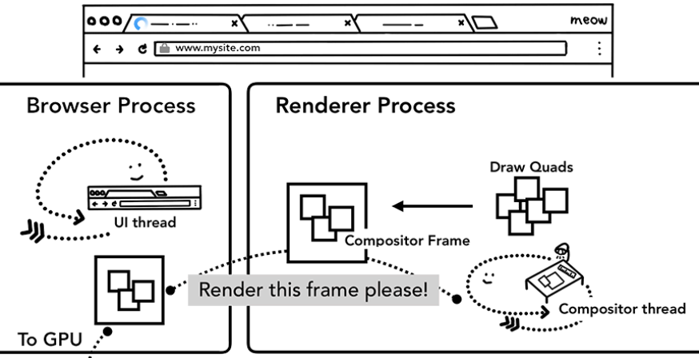
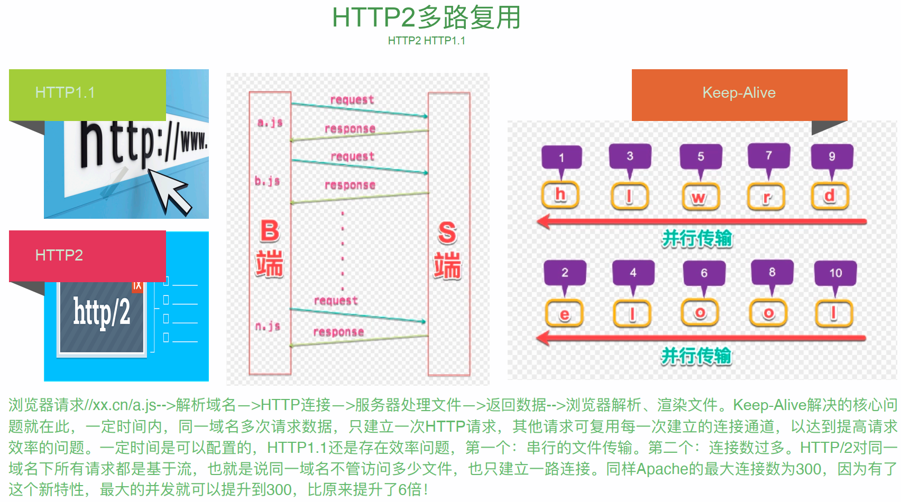

# 性能优化
# 雅虎军规
web前端性能的优化，要提到雅虎军规35条，虽然有点老，但要了解。解释地址 (opens new window)
# 面向切面编程
面向切面编程，简称AOP，AOP主要实现的目的是针对业务处理过程中的切面进行提取，它所面对的是处理过程中的某个步骤或阶段，以获得逻辑过程中各部分之间低耦合性的隔离效果。
代码案例
//要统计一下当前的所有的函数谁耗时最长
function test(){
alert(2);
return "test"
}
Function.prototype.before=function(fn){
var __self=this;
return function(){
//this指向调用函数
fn.apply(this,arguments);
return __self.apply(__self,arguments);
}
}
Function.prototype.after=function(fn){
var __self=this;
return function(){
var result=__self.apply(__self,arguments);
fn.apply(this,arguments);
return result
}
}
//挂载 self->test 执行before回调 执行self after 自己执行回调
test.before(function(){
alert(1)
}).after(function(){
alert(3)
})()
2
3
4
5
6
7
8
9
10
11
12
13
14
15
16
17
18
19
20
21
22
23
24
25
26
27
# Chrome调试
# 断点和捕获事件绑定
- 断点 sources面板，打开一个文件，点前面的行数就可是设置断点，点右侧的向下的箭头和跳转箭头，就可以向下走和跳出当前函数。
- 捕获事件绑定 elements面板，右侧的event listenters，选中一个元素，就可以看到绑定的事件
# 其他面板
- Audits面板 也是能直观的看到性能需要优化的点，不过我现在找不到这个面板了
- PerformanceTracer插件 需要在chrome商城下载
- Page Speed插件 需要在chrome商城下载
- performance.timing chrome的api，直接能反映出来一个请求过程中，各个阶段的时间
# Timeline帧渲染模式
基础概念
网页动画能够做到每秒60帧，就会跟显示器同步刷新，一秒之内进行60次重新渲染，每次重新渲染的时间不能超过16,66毫秒
黄色：JavaScript执行
紫色：样式计算和布局，即重排
绿色：重绘
可以根据 performance面板来录制
跟帧相关的API window.requestAnimationFrame() // 下一次
window.requestldleCallback() // 下几次重新渲染时
网页是分层的，触发分层的过程是：
- 1.获取DOM并将其分割为多个层
- 2.将每个层独立的绘制进位图中
- 3.将层作为纹理上传至GPU
- 4.复合多个层来生成最终的屏幕图像 触发分层
DOM子树渲染层(RenderLayer)-> RenderObject -> GraphicsContext (根元素、position、transform、半透明、css滤镜、Canvas2D、video、溢出)
Compositor -> 渲染层子树的图形层（GraphicsLayer）-> RenderLayer -> RenderObject .(Compositor将所有的拥有compositing layer进行合成，合成过程GPU进行 参与。合成完毕就能够将纹理映射到一个网格几何结构之上--在视频游戏或者CAD程序中，这种技术用来给框架式的3D模型添加“皮肤”。Chrome采用纹理把页面中的内容分块发送给GPU。纹理 能够以很低的代价映射到不同的位置，而且还能够以很低的代价通过把它们应用到一个非常简单的矩形网格中进行变形。这就是3D CSS的实现原理)( CSS3D透视变换、video、webgl、transform动画、加速CSS滤镜、叠加在已经触发合成层)
如何尽量避免重排
- 样式表越简单，重排和重绘就越快
- 重排和重绘的DOM元素层级越高，成本就越高
- table元素重排和重绘成本高于div
- 尽量不要把读操作和写操作，放在一个语句里面
- 统一改变样式
- 缓存重排结果
- 离线DOM Fragment/clone
- 虚拟DOM React
- 必要的时候 dispaly：none不影响重排和重绘。visibility对重排影响不影响重绘
# Profiles分析
观察nodejs内存泄露
Memory->Profiles面板在chrome上可以直观的看到内存的使用情况，在node上也有类似的。比如我启动一个node服务，然后输入 node-inspector, 会输出一个地址，打开这个地址就可以看到类似于Profiles的界面，更加直观检测node内存泄露等问题，比较高效。
# 高性能动画及渲染原理
如何实现动画
- jquery animation：setTimeout,top/left
- animation,transition,transform
- js+canvas/WebGL/SVG
- requestAnimationFrame
- GPU硬件加速
# 浏览器基础概念
# 浏览器渲染过程
- 处理流程：
- 1、输⼊⽹址并回车
- 2、解析域名
- 3、浏览器发送HTTP请求
- 4、服务器处理请求
- 5、服务器返回HTML响应
- 6、浏览器处理HTML页⾯
- 7、继续请求其他资源 上图就更形象的解释了浏览器渲染的过程，而下图是更加细化的描述过程，也更加重要。 简单概括一下过程：
- 第一步Prompt for unload，是提示卸载，就相当于打开一个页面的一瞬间；
- 第二步 redirect，是重定向，相当于找本地的缓存过程，这个过程还有一个动作 unload，是为了把上一个页面卸载掉；
- 第三步 app cache，如果第二步中有缓存的话（强制缓存），才走这一步，可以节省带宽，没有就会跳过这一步，如果有缓存就会直接跳到processing，前三步属于浏览器本地，后面就开始进入到网络。
- 然后 DNS、TCP、Request、Response 是属于网络方面的后面Processing、onLoad又回到CPU上。在TCP走向Req的过程，就开始http请求了，在req到res这个节点，就是服务器开始响应的节点。
- 响应完然后到浏览器这边，Processing是在处理DOM，这里会有一段响应时间，来解析各种事件（比如onclick事件，如果是外部引用，这里可能是一个空引用，如果是写在页面里，这里就是有指向的）。
- 最后就是onload，渲染到显示器上面。
简单总结：整个过程可以分为三个阶段，本地-》网络-》本地，第一部分是处理资源，第二部分是拿资源，第三部分是渲染新的资源。
在图中有很多箭头指向的API，这些操作可以计算出各步骤都花费多长时间，这里先不多讲，后面再说。API地址 (opens new window)
介绍这个过程，主要是为了性能优化
- 1.在redirect上两个API之间的时间，就是能优化的一点。
- 2.发生网络重定向进入到DNS，本地重定向到app cache。 如果是本地缓存，记录这个拿缓存多少时间，是能优化的第二点，这点上我们可做的是减少磁盘在资源上操作的次数。
- 3.DNS上可优化的，CDN
- 4.TCP上，第一，可以加带宽。第二，优化服务器（比如nodejs）。
- 5.res上两个节点，会把服务器处理的时间算上。在文件上可以把文件做小来优化。
# DNS详解
- DNS 是Domain Name System, 域名系统，⽤于将域名转换为IP。
- 顶级域名
- 域名主要看后缀，紧挨着后缀的是一级域名，再往前就是二级域名，依次类推。（www也算是）
- 域名资源记录
- 域名服务器
- 域名解析
# TCP三次握⼿与四次挥⼿
上图，是TCP协议头的封装，至少要二十个字节，首先是两个端口，一个是发送方的端口，一个是接收的端口；然后是顺序号，占四个字节； 接下来是应答号，是要对应顺序号的；然后是偏移量，标记，校验号，TCP控制选项等等。 这张图，就是讲三次握⼿与四次挥⼿的过程，TCP是可靠的协议，所谓可靠就是要保证接收端能接收到。看这张图， 首先，客户端发起请求，SYN指令，seq是一个顺序号，服务端一直在打开一个端口监听；服务端监听到后响应，发送SYN包，有响应号，有应答号，应答号是顺序号+1； 此时客户端处于一个半连接状态，在收到服务端的应答包后，返回给服务器端一个包，通知服务器端应答包已收到，所以ACK就是y+1，这是三次握手。接下来是传输过程，传输过程是来回多次的， 图中只画了一次。然后是四次挥手，一般来说断开链接，是由客户端主动断开的，是正常情况的，也有服务端主动断开的，一般是超时；客户端发送 断开指令，然后客户端这边响应接到指令，但客户端这边有可能有工作没干完，所以等完成后再发送一个包给客户端，所以响应和完成后再发送这两个步骤是单独的，不能合并；最后客户端在发送一个包，表示已经收到了，链接才算真正的断开了。
# CDN概念
# 缓存机制
缓存会根据请求保存输出内容的副本，例如html页⾯，图⽚，⽂ 件，当下⼀个请求来到的时候：如果是相同的URL，缓存直接使 ⽤副本响应访问请求，⽽不是向源服务器再次发送请求。
- 缓存的优点：
- 减少相应延迟
- 减少⽹络带宽消耗
# 浏览器缓存机制－浏览器第⼀次请求
# 浏览器缓存机制－浏览器再次请求
# Etag/If-None-Match策略
- Etag： web服务器响应请求时，告诉浏览器当前资源在服务器 的唯⼀标识（⽣成规则由服务器决定）
- If-None-Match：当资源过期时（使⽤Cache-Control标识的maxage），发现资源具有Etage声明，则再次向web服务器请求时带 上头If-None-Match （Etag的值）。 web服务器收到请求后发现 有头If-None-Match 则与被请求资源的相应校验串进⾏⽐对，决 定返回200或304。
# Last-Modified/If-Modified-Since策略
- Last-Modified：标⽰这个响应资源的最后修改时间。 web服务器在响应请求 时，告诉浏览器资源的最后修改时间。
- If-Modified-Since：当资源过期时（使⽤Cache-Control标识的max-age），发 现资源具有Last-Modified声明，则再次向web服务器请求时带上头 IfModified-Since，表⽰请求时间。 web服务器收到请求后发现有头If-ModifiedSince 则与被请求资源的最后修改时间进⾏⽐对。若最后修改时间较新，说 明资源又被改动过，则响应整⽚资源内容（写在响应消息包体内）， HTTP 200；若最后修改时间较旧，说明资源⽆新修改，则响应HTTP 304 (⽆需包 体，节省浏览)，告知浏览器继续使⽤所保存的cache。
# 现代浏览器渲染过程
- 浏览器的进化过程
- 1990年，蒂姆·伯纳斯·李开发了第一个网页浏览器WorldWideWeb，后改名为Nexus。WorldWideWeb浏览器支持早期的HTML标记 语言，功能比较简单，只能支持文本、简单的样式表、电影、声音、图片等资源的显示。
- 1993年，马克·安德森领导的团开发了一个真正有影响力的浏览器Mosaic，这就是后来世界上最流行的浏览器Netscape Navigator。
- 1995年，微软推出了闻名于世的浏览器Internet Explorer。 第一次浏览器大战开始，持续两年
- 1998年，Netscape公司开放Netscape Navigator源代码，成立了Mozilla基金会。 第二次浏览器大战开始，持续八年
- 2003年，苹果公司发布了Safari浏览器。
- 2004年，Netscape公司发布了著名的开源浏览器Mozilla Firefox
- 2005年，苹果公司开源了浏览器中的核心代码，基于此发起了一个新的开源项目WebKit（Safari浏览器的内核）。
- 2008年， Google公司已WebKit为内核，创建了一个新的浏览器项目Chromium。以Chromium为基础，谷歌发布了Chrome浏览器。 至于这两者的关系，可以简单地理解为：Chromium为实验版，具有众多新特性；Chrome为稳定版。
- 现代浏览器的特征与结构
- 特征：
- 网络
- 资源管理
- 网页浏览
- 多页面管理
- 插件和扩展
- 账户和同步
- 安全机制
- 开发者工具
- 结构：
- 用户界面（User Interface）
- 浏览器引擎（Browser Engine）
- 渲染引擎（Rendering Engine）
- 网络（Networking）
- XML解析器（XML Parser）
- 显示后端（Display Backend）
- 数据持久层（Data Persistence）

渲染引擎结构与工作流程:以HTML/JavaScript/CSS等文件作为输入，以可视化内容作为输出
- 特征：
- Chrome 浏览器架构
- Browser：控制程序的“chrome”部分，包括地 址栏，书签，后退和前进按钮。还处理Web浏 览器的不可见的，和特权部分，例如网络请求 和文件访问。
- Renderer：负责显示网站的选项卡内的所有内 容。
- Plugin：控制网站使用的所有插件，例如 flash。
- GPU：独立于其他进程的GPU处理任务。 它被 分成多个不同的进程，因为GPU处理来自多个 程序的请求并将它们绘制在同一个面中。
- Chrome 浏览器的渲染过程
- Chrome 渲染器进程
- 渲染器进程负责选项卡内发生的所有事情。 在 渲染器进程中，主线程处理你为用户编写的大 部分代码。
- 如果你使用了web worker 或 service worker， 有时JavaScript代码的一部分将由工作线程处 理。 排版和栅格线程也在渲染器进程内运行， 以便高效、流畅地呈现页面。
- Chrome 渲染过程：解析部分
- 构建DOM
- 子资源加载(注意JavaScript可以阻止解析)
- 提示浏览器如何加载资源
- 样式表计算
- 布局
- 绘制
- Chrome 渲染过程：合成部分
- 把文档的结构、元素的样式、几何 形状和绘制顺序转换为屏幕上的像 素称为光栅化。
- 合成是一种将页面的各个部分分 层，分别栅格化，并在一个被称为 合成器线程的独立线程中合成为页 面的技术。
- Chrome 渲染过程：GPU渲染
- 一旦创建了层树并确定了绘制顺序，主线程就会将该信息提交给合 成器线程。 合成器线程然后栅格化每个图层。 一个图层可能像页 面的整个长度一样大，因此合成器线程会将它们分成图块，并将每 个图块发送到光栅线程。 栅格线程栅格化每一个tile并将它们存储 在GPU内存中。
- 通过IPC将合成器帧提交给浏览器进程。这时可以从UI线程添加另 一个合成器帧以用于浏览器UI更改，或者从其他渲染器进程添加扩 充数据。 这些合成器帧被发送到GPU用来在屏幕上显示。 如果发 生滚动事件，合成器线程会创建另一个合成器帧并发送到GPU。
- 合成的好处是它可以在不涉及主线程的情况下完成。 合成线程不 需要等待样式计算或 JavaScript 执行。 这就是合成动画是平滑性 能的最佳选择的原因。 如果需要再次计算布局或绘图，则必须涉 及主线程。
- Chrome 渲染器进程
- 初窥 WebKit
- WebKit 官网： https://webkit.org/
- Blink 是未来
- Blink官方文档： http://www.chromium.org/blink
# H5性能优化
# 初步优化
- 雅⻁军规
- 首先是HTML，要控制html的数量；善用css。
- 压缩，压缩和合并要有一个指标来衡量，webpack默认的一种最佳的状态，小于30kb，不会导出一个单独的文件。 根据浏览器的特性，并发限制，请求最多在5个。
- CDN，比如请求5个达不到业务需求，把资源放到CDN上。还有一个使用CDN的好处，在页面上肯定是有cookie的，如果cookie太大，你访问这个域下的页面，这个cookie会一直带着，额外增加不必要的开销。
- 网速，通过判断用户的网络类型（），来切换页面，有简版页面，模糊图页面。
- 移动网络测速的几种方法：
- 1.H5天生属性，webkit和moz有connection（通过navigator.connection）但不是很准，移动端支持不是很好，如果不支持要设置connection.type=0。
- 2.用一张图片去测速。
- 3.多普勒测速,分5次请求计算。
- 可以通过PerformanceTiming来得到各项指标。
- 离线缓存，localStorage 同步读取 5M，超过2.5M有些机型就卡了。
//伪代码 const lists={ "main.js":"...md5.js", "...mainmd5.js":"js" //把js成对存储 } //启动脚本 const __version=localStorage['main.js']; if(__version){ //缓存的比较 if(lists["main.js"]==__version){ addScript() }else{ localStorage.remove(localStorage['main.js']); localStorage.remove(localStorage[lists['main.js']]); } }else{ __version=lists['main.js']; //开始缓存 fetch(__version).then((data)=>{ localStorage['main.js']=lists['main.js'] localStorage[lists['main.js']]=data }) } function addScript(key,src){ if(document.getElementById("main")){ return }else{ //顶部追加script } } <script id="main" src="${__version}"></script>1
2
3
4
5
6
7
8
9
10
11
12
13
14
15
16
17
18
19
20
21
22
23
24
25
26
27
28
29
30
31
32 - 缓存策略
- 缓存的优先级 cache-control>expires>etag>last-modified
- ⽹站协议 
# 渲染中性能优化
- 重绘影响
- 重排影响
# ⻚⾯加载性能优化
- 页面加载性能指标
- FP：仅有⼀个 div 根节点。
- FCP：包含⻚⾯的基本框架，但没有数据内容。
- FMP：包含⻚⾯所有元素及数据。
- 页面白屏原因
- css&js 文件获取
- js 文件解析
- dom 生成
- cssom 生成
- VUE的执行
- Long task
- 总结
# NodeJS性能优化
- 内存回收
- 内存快照
- 压力测试
- 监控异常